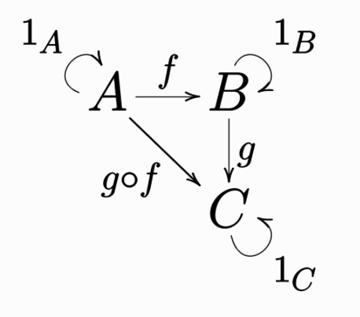

Monoidal categories in lambeq
In order to use the advanced features of lambeq and extend it, an understanding of monoidal categories and how it is implemented in the lambeq.backend is required.
Categories
A category consists of a collection of objects \(A, B, C, \ldots\) and a collection of morphisms between objects of the form \(f: A \to B, g: B \to C, h: C \to D, \ldots\), such that:
Morphisms with matching types compose. For example, \(f: A \to B\) and \(g: B \to C\) can compose to make \(g \circ f: A \to C\), but not \(f \circ g\).
Morphisms compose in an associative way: \((h \circ g) \circ f = h \circ (g \circ f)\)
Each object has an identity arrow: \(1_B \circ f = f = f \circ 1_A\)
These definitions are implicitly encoded in this commutative diagram: any directed path between two specific objects represents equal morphisms.

For free categories: we first define generating objects with the Ty class and generating morphisms with the Box class, then build composite morphisms by freely combining the generating morphisms using backward composition >> (then).
[1]:
from lambeq.backend.grammar import Box, Id, Ty
A, B, C, D = map(Ty, 'ABCD')
f = Box('f', A, B)
g = Box('g', B, C)
h = Box('h', C, D)
# the codomain of f and domain of g match, so f and g compose
f >> g
assert f.cod == g.dom == B
# associativity
assert f >> (g >> h) == f >> g >> h == (f >> g) >> h
# identity
assert Id(A) >> f == f.to_diagram() == f >> Id(B)
As mentioned above, in lambeq the generating morphisms are defined using the Box class. When morphisms are composed, they combine to become an Diagram. This explains the need for the grammar.Box.to_diagram() call above as f was declared as a grammar.Box instance and cannot be directly tested for equality with a grammar.Diagram instance. Compared to traditional category theory notation, lambeq prefers to use backwards composition >>, where f >> g should be read as “f followed by g”.
[2]:
# only arrows that 'type-check' can be composed
diagram = f >> g >> h
A Diagram behaves like a List[Diagram]: it can be indexed, sliced, or even reversed. Reversing a morphism actually performs the dagger operation, which is the abstract notion of a dagger in quantum mechanics and linear algebra.
[3]:
print(diagram)
print(f'Indexing:', diagram[0])
print(f'Slicing:', diagram[1:])
print(f'Reversing (dagger):', diagram[::-1])
|Ty() @ [f; Ty(A) -> Ty(B)] @ Ty()| >> |Ty() @ [g; Ty(B) -> Ty(C)] @ Ty()| >> |Ty() @ [h; Ty(C) -> Ty(D)] @ Ty()|
Indexing: |Ty() @ [f; Ty(A) -> Ty(B)] @ Ty()|
Slicing: |Ty() @ [g; Ty(B) -> Ty(C)] @ Ty()| >> |Ty() @ [h; Ty(C) -> Ty(D)] @ Ty()|
Reversing (dagger): |Ty() @ [h†; Ty(D) -> Ty(C)] @ Ty()| >> |Ty() @ [g†; Ty(C) -> Ty(B)] @ Ty()| >> |Ty() @ [f†; Ty(B) -> Ty(A)] @ Ty()|
Monoidal categories
A monoidal category is a category equipped with the monoidal product \(\otimes\) and monoidal unit \(I\) and has the following properties:
objects can be combined to return another object (e.g \(A \otimes B\))
morphisms can be combined to return another morphism (\((f: A \to B) \otimes (g: C \to D) = f \otimes g: A \otimes C \to B \otimes D\)).
\(\otimes\) is associative on objects: \((A \otimes B) \otimes C = A \otimes (B \otimes C)\)
\(\otimes\) is associative on morphisms: \((f \otimes g) \otimes h = f \otimes (g \otimes h)\)
\(I\) is the identity on objects for \(\otimes\): \(A \otimes I= A = I \otimes A\)
\(1_I\) is the identity on arrows for \(\otimes\): \(f \otimes 1_I = f = 1_I \otimes f\)
For monoidal categories: again, the generating objects are defined with the Ty class, and the generating morphisms with the Box class; the composite objects are built using @ and the composite morphisms using >>.
[4]:
from lambeq.backend.grammar import Box, Id, Ty
A, B, C = Ty('A'), Ty('B'), Ty('C')
f = Box('f', A, B)
g = Box('g', B, C)
h = Box('h', B, A)
# combining types
A @ B
# combining boxes
f @ g
# associativity
assert (A @ B) @ C == A @ B @ C == A @ (B @ C)
assert (f @ g) @ h == f @ g @ h == f @ (g @ h)
# monoidal unit
assert A @ Ty() == A == Ty() @ A
assert f @ Id(Ty()) == f.to_diagram() == Id(Ty()) @ f
Monoidal categories have an elegant graphical calculus, which allow them to be drawn and manipulated graphically.
[5]:
x = Box('x', A, A)
y = Box('y', A @ A, B)
diagram = x @ Id(A) >> y
print(repr(diagram))
diagram.draw(figsize=(5, 3))
|Ty() @ [x; Ty(A) -> Ty(A)] @ Ty(A)| >> |Ty() @ [y; Ty(A) @ Ty(A) -> Ty(B)] @ Ty()|

A Ty can be indexed, sliced, or even reversed, just like a List[Ty].
[6]:
t = A @ B @ C
print(t)
print(repr(t))
print('Indexing:', t[0])
print(f'Slicing:', t[1:])
print(f'Reversing:', t[::-1])
A @ B @ C
Ty(A) @ Ty(B) @ Ty(C)
Indexing: A
Slicing: B @ C
Reversing: C @ B @ A
Again, a grammar.Diagram behaves like a List[Diagram], so it can be indexed, sliced, and reversed. Reversing a diagram performs the dagger operation.
[7]:
print(diagram)
print(f'Indexing:', diagram[0])
print(f'Slicing:', diagram[1:])
print(f'Reversing (dagger):', diagram[::-1])
from lambeq.backend.drawing import draw_equation
print('\nDagger operation:')
# boxes are drawn as trapeziums to demonstrate the reflection along the horizontal axis
draw_equation(diagram, diagram[::-1], symbol='->', figsize=(8, 3), asymmetry=0.2)
|Ty() @ [x; Ty(A) -> Ty(A)] @ Ty(A)| >> |Ty() @ [y; Ty(A) @ Ty(A) -> Ty(B)] @ Ty()|
Indexing: |Ty() @ [x; Ty(A) -> Ty(A)] @ Ty(A)|
Slicing: |Ty() @ [y; Ty(A) @ Ty(A) -> Ty(B)] @ Ty()|
Reversing (dagger): |Ty() @ [y†; Ty(B) -> Ty(A) @ Ty(A)] @ Ty()| >> |Ty() @ [x†; Ty(A) -> Ty(A)] @ Ty(A)|
Dagger operation:
A monoidal category equipped with a Swap is known as a symmetric monoidal category. Nested swaps can be defined using the swap() method.
[8]:
from lambeq.backend.grammar import Diagram, Swap
Swap(A, B).draw(figsize=(1, 1), draw_as_pregroup=False)
Diagram.swap(A @ B, C).draw(figsize=(2, 2), draw_as_pregroup=False)

Note
In a strict mathematical sense, the associativity and unit rules of \(\otimes\) in a monoidal category only hold up to isomorphism. As a consequence, this definition requires extra morphisms such as unitors and associators, as well as complicated coherence conditions. Instead, lambeq strictly enforces the rules to hold up to equality, so such coherence conditions are unnecessary. This greatly simplifies its practical use.
Rigid monoidal categories
A rigid category is a monoidal category where every object \(A\) has a left adjoint \(A^l\) and right adjoint \(A^r\). The left adjoint of the right adjoint of a type is equal to the type itself, and vice versa: \((A^r)^l = A = (A^l)^r\)
In the lambeq, the adjoint of a type Ty is obtained using the .l and .r properties:
[9]:
from lambeq.backend.grammar import Box, Id, Ty
A = Ty('A')
print(A.l, 'is represented as', repr(A.l))
print(A.r, 'is represented as', repr(A.r))
assert A.r.l == A == A.l.r
A.l is represented as Ty(A).l
A.r is represented as Ty(A).r
The key property of a rigid category is the existence of cups and caps between an object and its adjoint: these are special morphisms that are drawn as bent wires in diagrammatic notation.
[10]:
from lambeq.backend.grammar import Cap, Cup
draw_equation(Cup(A.r, A.r.r), Cup(A, A.r), Cup(A.l, A), symbol='...', figsize=(8, 1))
draw_equation(Cap(A.l, A.l.l), Cap(A, A.l), Cap(A.r, A), symbol='...', figsize=(8, 1))
Cups and caps satisfy the so-called snake equations:
[11]:
snake1 = Id(A) @ Cap(A.r, A) >> Cup(A, A.r) @ Id(A)
snake2 = Cap(A, A.l) @ Id(A) >> Id(A) @ Cup(A.l, A)
assert snake1.normal_form() == Id(A) == snake2.normal_form()
print('Snake Equations - For any object', A, ':')
draw_equation(snake1, Id(A), snake2, figsize=(8, 2))
Snake Equations - For any object A :

Note
The grammar.Diagram.normal_form() method used above also applies on standard monoidal diagrams.
Nested cups and caps can be created using the grammar.Diagram.cups() and grammar.Diagram.caps() methods.
[12]:
from lambeq.backend.grammar import Diagram
A, B = Ty('A'), Ty('B')
nested_cup = Diagram.cups(A @ B, (A @ B).r)
nested_cap = Diagram.caps((A @ B).r, A @ B)
nested_snake = Id(A @ B) @ nested_cap >> nested_cup @ Id(A @ B)
assert nested_snake.normal_form() == Id(A @ B)
draw_equation(nested_snake, nested_snake.normal_form())